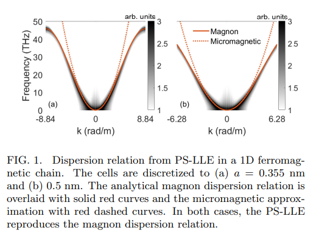
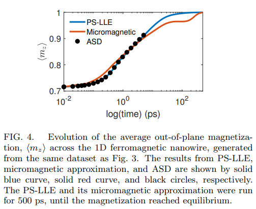
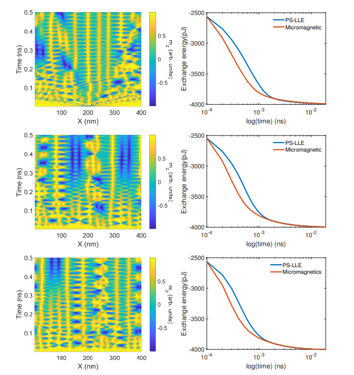

12月に掲載された論文やプレプリントをピックアップして紹介していきます。説明を多めにしています。定期的に更新したいと思います。
論文タイトル一覧
磁化ダイナミクスの擬スペクトルランダウ・リフシッツ記述
磁化の回転運動を記述するランダウ・リフシッツ方程式に対して、エネルギーと運動量の保存を満たすマグノンの分散関係を反映させる擬スペクトル法を提案した。この手法は、原子スケールと連続体スケールの両方を正確に記述できるだけでなく、任意のスケールでの解析的研究を可能にする。このモデルの適用性を示すために、1次元の垂直磁気異方性を持つ強磁性鎖における変調不安定性と超高速トランジェントグレーティングの現象を調べた。このモデルは、格子依存性がなく、特異点の記述にも適していることから、トポロジカルテクスチャーや遠方からの平衡状態のダイナミクスの研究に理想的であると示唆した。
2023-12-21
Pseudo-spectral Landau-Lifshitz description of magnetization dynamics
Kyle Rockwell, et al. (University of Colorado, Colorado Springs, CO 80918, USA)
https://arxiv.org/abs/2311.03505
Pseudo-spectral Landau-Lifshitz description of magnetization dynamics
Kyle Rockwell, et al. (University of Colorado, Colorado Springs, CO 80918, USA)
https://arxiv.org/abs/2311.03505



【コメント】
LLG方程式と原子シミュレーションを畳み込みで接続しているので、より厳密な計算が可能となる点で興味深い。
【用語】 マグノン：磁化の量子的な揺らぎに対応する準粒子で、角運動量の量子である。強磁性体や反強磁性体などの磁性物質において、磁化のダイナミクスや熱輸送のメカニズムとして重要な役割を果たす。変調不安定性：非線形波動方程式において、一様な背景状態に対する小さな摂動が指数関数的に成長する現象。強磁性体においては、磁場や磁化の不均一性によって引き起こされる。変調不安定性は、磁化の局所化やドメイン構造の形成に関係する。超高速トランジェントグレーティング：フェムト秒光パルスを用いて、物質表面に周期的なパターンを作り出す技術。パターンの周期は10 nmから100 nmの範囲で調整できる。この技術は、磁性物質において、磁場や磁化の超高速ダイナミクスを制御したり、観測したりするのに利用される。擬スペクトル法：フーリエ変換やラプラス変換などのスペクトル法を用いて、偏微分方程式の数値解を求める手法。スペクトル法は、高精度で高速な計算が可能であるが、非線形項や境界条件の取り扱いが困難であることが多い。擬スペクトル法は、これらの問題を回避するために、スペクトル法と有限差分法などの他の数値手法を組み合わせる。
【提案手法】 この研究では、ランダウ・リフシッツ方程式の非線形項に対して、擬スペクトル法を適用することで、マグノンの分散関係を正確に再現する手法を提案した。この手法では、磁化の空間微分項に対して、フーリエ変換を行い、スペクトル空間で非線形項を計算する。非線形項は、磁化の自己相互作用によるエネルギーと運動量の保存を反映するカーネル関数との畳み込みとして表される。カーネル関数は、原子スケールでのマグノンの分散関係を再現するために、磁化の格子定数に依存する項を含む。連続体スケールでのマグノンの分散関係は、カーネル関数のテイラー展開によって得られる。この手法は、磁化の格子依存性を排除し、原子スケールと連続体スケールの間の遷移領域を記述できる。また、スペクトル空間での計算によって、高精度で高速な数値解析が可能になる。
【学術的新規性】 この研究は、磁化のダイナミクスを記述するランダウ・リフシッツ方程式に対して、擬スペクトル法を初めて適用したものである。マグノンの分散関係を正確に再現するカーネル関数を導出し、原子スケールと連続体スケールの両方を統一的に記述できるモデルを構築した。この研究は、擬スペクトル法を用いて、変調不安定性や超高速トランジェントグレーティングなどの現象を解析的に研究し、原子スケールの磁化ダイナミクスの振る舞いを明らかにしたものである。擬スペクトル法が、格子依存性がなく、特異点の記述にも適していることから、トポロジカルテクスチャーや遠方からの平衡状態のダイナミクスの研究に理想的であることを示唆している。
【用語】 マグノン：磁化の量子的な揺らぎに対応する準粒子で、角運動量の量子である。強磁性体や反強磁性体などの磁性物質において、磁化のダイナミクスや熱輸送のメカニズムとして重要な役割を果たす。変調不安定性：非線形波動方程式において、一様な背景状態に対する小さな摂動が指数関数的に成長する現象。強磁性体においては、磁場や磁化の不均一性によって引き起こされる。変調不安定性は、磁化の局所化やドメイン構造の形成に関係する。超高速トランジェントグレーティング：フェムト秒光パルスを用いて、物質表面に周期的なパターンを作り出す技術。パターンの周期は10 nmから100 nmの範囲で調整できる。この技術は、磁性物質において、磁場や磁化の超高速ダイナミクスを制御したり、観測したりするのに利用される。擬スペクトル法：フーリエ変換やラプラス変換などのスペクトル法を用いて、偏微分方程式の数値解を求める手法。スペクトル法は、高精度で高速な計算が可能であるが、非線形項や境界条件の取り扱いが困難であることが多い。擬スペクトル法は、これらの問題を回避するために、スペクトル法と有限差分法などの他の数値手法を組み合わせる。
【提案手法】 この研究では、ランダウ・リフシッツ方程式の非線形項に対して、擬スペクトル法を適用することで、マグノンの分散関係を正確に再現する手法を提案した。この手法では、磁化の空間微分項に対して、フーリエ変換を行い、スペクトル空間で非線形項を計算する。非線形項は、磁化の自己相互作用によるエネルギーと運動量の保存を反映するカーネル関数との畳み込みとして表される。カーネル関数は、原子スケールでのマグノンの分散関係を再現するために、磁化の格子定数に依存する項を含む。連続体スケールでのマグノンの分散関係は、カーネル関数のテイラー展開によって得られる。この手法は、磁化の格子依存性を排除し、原子スケールと連続体スケールの間の遷移領域を記述できる。また、スペクトル空間での計算によって、高精度で高速な数値解析が可能になる。
【学術的新規性】 この研究は、磁化のダイナミクスを記述するランダウ・リフシッツ方程式に対して、擬スペクトル法を初めて適用したものである。マグノンの分散関係を正確に再現するカーネル関数を導出し、原子スケールと連続体スケールの両方を統一的に記述できるモデルを構築した。この研究は、擬スペクトル法を用いて、変調不安定性や超高速トランジェントグレーティングなどの現象を解析的に研究し、原子スケールの磁化ダイナミクスの振る舞いを明らかにしたものである。擬スペクトル法が、格子依存性がなく、特異点の記述にも適していることから、トポロジカルテクスチャーや遠方からの平衡状態のダイナミクスの研究に理想的であることを示唆している。